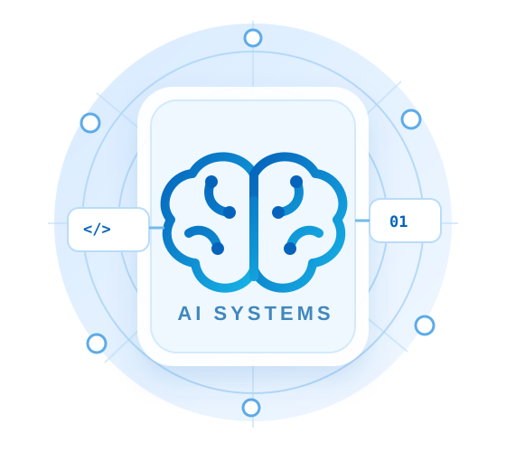

Programming
Python, MATLAB, HTML, CSS, JavaScript
AI Engineering Student &
Outbound Operations Team Lead
Combining artificial intelligence, software development, and data-driven business operations.
Vilnius, Lithuania

Engineering student with a focus on intelligent systems and practical technology applications.
I enjoy transforming complex problems into clear, measurable workflows.
I'm studying Informatics Engineering with an AI Systems specialization at VILNIUS TECH. Alongside university, I work in outbound operations at Triarii Growth, where I coordinate research, team workflows, and data-driven prospecting.
My technical interests include Python, automation, web development, and the practical use of AI to improve business processes.
A combination of programming, AI tools, and operational problem-solving.
Python, MATLAB, HTML, CSS, JavaScript
AI-assisted workflows, research, data processing
Next.js, responsive websites, SEO fundamentals
Team coordination, outbound campaigns, ICP research
Education and professional experience.
VILNIUS TECH, Lithuania
AI Systems specialization, with coursework in programming and engineering.
Triarii Growth
Coordinating outbound operations, lead research, and team execution across client projects.
Triarii Growth
Worked on prospect research, campaign operations, and growth-focused workflows.
Selected areas where technology and business operations meet.
Research processes that combine structured data, qualification rules, and AI-assisted analysis.
Repeatable methods for prospecting, quality control, and campaign coordination.
Responsive web interfaces and search-focused technical improvements.